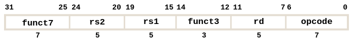
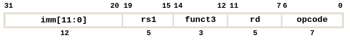
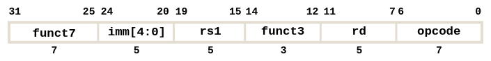
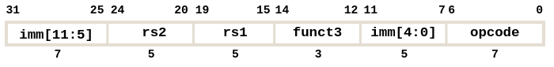
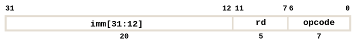
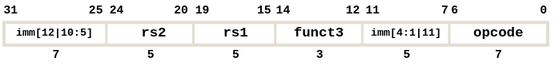
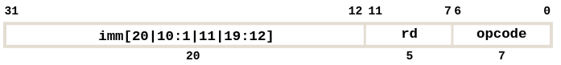

RISC-V
Table of Contents
1. Assembly
We don’t want to change the CPU after we build it, so we must decide beforehand on a specific set of instructions that will be supported. Different CPUs implement different instructions, so the set of instructions a particular CPU implements is known as the Instruction Set Architecture (ISA), and the programming language defined by the ISA is commonly known as an assembly language.
Early on, the trend in ISA design was to add more and more complicated instructions to new CPUs to do more elaborate operations. RISC, or Reduced Instruction Set Computing, introduced the philosophy of keeping the instruction set small and simple, and leaving it up to software to do complicated operations by composing smaller ones. This allows RISC-based CPUs to be simpler and faster than a more complex CPU.
RISC-V is a relatively popular, open source version of RISC that was invented at Berkeley in 2010. A RISC-V system is composed of two main parts: the CPU, which is responsible for computing, and main memory, which is responsible for long-term data storage.
2. Registers
The CPU is designed to be extremely fast, often completing one instruction every nanosecond or faster. Thus, going to main memory would take hundreds or even thousands of times longer, so the CPU can also store a small amount of memory through components called registers. Each register stores 32 bits of data (for RV32, a 32-bit variant).
Registers are numbered from 0 to 31, referred to as x0 to x31. The register x0 is special and always stores 0. The other 31 registers are available to hold variables, however we have specific conventions on how to use them.
2.1. Calling Convention
To ensure functions in RISC-V behave properly, we use a calling convention to ensure that registers are used properly. Each register has a name associated with them. They signal the most common use case for that register:
| Register | Name | Description |
|---|---|---|
x0 |
zero |
zero |
x1 |
ra |
return address |
x2 |
sp |
stack pointer |
x3 |
gp |
global pointer |
x4 |
tp |
thread pointer |
x5-x7 |
t0-t2 |
temporary registers |
x8-x9 |
s0-s1 |
saved registers |
x10-x17 |
a0-a7 |
argument registers |
x18-x27 |
s2-s11 |
saved registers |
x28-x31 |
t3-t6 |
temporary registers |
The stack pointer tracks the end of the stack. Everything above the stack pointer (higher memory addresses) is reserved, whereas everything below is unallocated. Everything between sp and the original location of sp is useable space for your program. To use the stack, move sp down, and store data in the new space. After freeing the space, sp should moved back up.
The return address stores where a function should return back to after completing. A function will assume that ra is where to jump back to when returning.
The argument registers are used to store function arguments. a0 and a1 are also used for return values. These can be changed by functions, so we can’t assume they are unchanged after a function call.
The temporary registers are used for intermediate calculations. These can also be changed by functions.
The saved registers are used for permanent variables. They cannot be changed by functions. If a function changes a saved register, it is responsible for restoring the old value before returning.
3. Instructions
Each line of RISC-V code is a single instruction, which executes a simple operation on registers. Instructions are generally written in the format:
<instruction name> <destination register> <operands>
For example, the instruction add x5 x6 x7 means “add the values in x6 and x7, then store the result in x5”.
Comments are written using the # symbol. Since RISC-V does not have variable names, comments are far more important in assembly than a high-level language.
Just like in C, RISC-V uses a similar memory model. Code is stored in the text section of memory, where every instruction is stored as a 32-bit number — the next instruction is always stored 4 bytes after the current one. A special 33rd register called the program counter (pc) keeps track of which line of code is being run.
3.1. Arithmetic Operations
Use the add instruction for addition:
add x1 x2 x3 # x1 = x2 + x3
Use the sub instruction for subtraction:
sub x1 x2 x3 # x1 = x2 - x3
These are all the arithmetic operations supported by RISC-V:
add rd rs1 rs2 # add
sub rd rs1 rs2 # subtract
and rd rs1 rs2 # bitwise and
or rd rs1 rs2 # bitwise or
xor rd rs1 rs2 # bitwise xor
sll rd rs1 rs2 # shift left logical
srl rd rs1 rs2 # shift right logical
sra rd rs1 rs2 # shift right airthmetic
slt rd rs1 rs2 # set less than (signed): rd = (rs1 < rs2) ? 1 : 0
sltu rd rs1 rs2 # set less than (unsigned)
3.2. Immediate Operations
Immediates are numerical constants. For example, to add an immediate to a register, use the special instruction addi:
addi x3 x4 10 # x3 = x4 + 10
Note that both addi x3 x4 x5 and add x3 x4 10 are both invalid RISC-V instructions: be careful with using the register versus the immediate version of an instruction. An immediate subtraction instruction does not exist because we can subtract an immediate by using its negative version. Therefore, addi is a signed instruction.
Additionally, since the number zero appears very often in code, the register x0 is “hard-wired” to the value 0.
3.3. Sign and Zero Extending
There are two main representation schemes used: unsigned numbers, and two’s complement for signed numbers.
For unsigned numbers, we fill the unused top bits with zeros (zero-extension).
For signed numbers, we fill the unused top bits with the most significant bit (sign-extension).
3.4. Control Flow
In RISC-V, every control flow operation tries to move to a specified instruction in memory. Labels identify a specific instruction in code so we can reference it with a control flow operation. The following are all of the RISC-V control flow operations:
beq rs1 rs2 label # branch if equal: if rs1 == rs2, jump to label
bne rs2 rs2 label # branch if not equal
blt rs1 rs2 label # branch if less than (signed)
bge rs1 rs2 label # branch if greater or equal (signed)
bltu rs1 rs2 label # branch if less than (unsigned)
bgeu rs1 rs2 label # branch if greater or equal (unsigned)
j label # jump to label unconditionally
We can use the jal (jump and link) and the jr (jump register) instructions to create functions:
jal rd label # jump and link: jumps to label, sets rd to pc+4 (next instruction)
jr rs1 # jump register: jump to instruction at address rs1
3.5. Memory
When registers are not enough to store our data, we may need to use main memory instead. Here, we can use these instructions:
lw rd imm(rs1) # load word: load 4 bytes from memory at imm+rs1 into rd
sw rs2 imm(rs1) # store word: store the 4 bytes in rs2 into memory at imm+rs1
lb rd imm(rs1) # load byte (signed, sign extend the byte)
lbu rd imm(rs1) # load byte (unsigned, zero extend the byte)
sb rs2 imm(rs1) # store byte (LSB only)
Remember since we use little-endian, the LSB is stored in the lower memory address. Additionally, when we store a byte, we take the LSB from the register.
3.6. Pseudoinstructions
A pseudoinstruction is an instruction that does not exist as a hardware instruction, but is composed of one or more actual hardware instructions that is translated automatically by the assembler. Pseudoinstructions exist to make certain operations easier:
li rs1 1 # load immediate: loads the immediate value 1 to rs1
la rd label # load address: loads the address of the label
mv rd rs1 # move: copies the value in rs1 into rd
not rd rs # flips all the bits in rs
4. Instruction Formats
In RISC-V, every instruction is 32 bits (4 bytes) long. However, since different instructions require different values (e.g. add needs 3 register inputs, whereas addi requires 2 registers and 1 immediate), we define multiple formats based on what we need to store.
4.1. R-Type

The R-type (register-type) is designed for instructions with 3 registers and no imemdiates (e.g. add, sub). Each register is identified by its number: 32 registers, so we need 5 bits to identify each register.
The opcode identifies the specific instruction in use. It is always the last 7 bits of the instruction across all formats, so we can use this to determine which format is in use. However, some similar instructions get assigned the same opcode (e.g. all arithmetic R-type instructions). In these cases, funct3 and funct7 are used to further differentiate instructions with the same opcode.
4.2. I-Type

The I-type (immediate-type) is designed for instructions with 2 registers (rs1 and rd) and 1 immediate. Note that stores use rs1 and rs2 (no destination register rd), so they use a different type. Notice that the immediate is only allocated 12 types, which means they can only hold values between -2048 and 2047.
4.2.1. I-Type with Shift
Shift instructions use a slightly modified I-type format:

This is because shift instructions only have a max shift of 31, so they are only allocated 5 bits for the immediate.
4.3. S-Type

The S-type (store-type) is designed for store instructions, where you have 2 source registers and an immediate.
4.4. U-Type
U-type (upper immediate) instructions are for lui and auipc:
lui rd imm # load upper immediate: rd = imm << 12
auipc rd imm # add upper immediate to program counter: rd = (imm << 12) + PC
These are primarily used in the li and la pseudoinstructions. Since addi only accepts a 12-bit immediate, we need a way to load immediates larger than 12 bits: li uses lui to accomplish this under the hood.
For auipc, often when we write code, we want to allow multiple programs to be combined. However, each time we do this, it would change the absolute positions of our labels. Therefore, many instructions involving labels use relative addressing with auipc.

4.5. B-Type
Labels don’t actually exist at the machine level, so the assembler actually converts the labels into explicit references to a particular line of code. It does this by calculating an offset, which specifies how many bytes off we would need to jump to get to that label.
Note that these offsets will always be at least a multiple of 2 (since RISC-V core instructions are all 32-bit, and some extensions use 16-bit). Thus, we don’t actually need to store the last 0 in the binary representation.
Branch instructions use the B-type (branch-type) format:

Note that branch instructions have 13-bit immediates, which gives us \([-4096, 4094]\) bytes of offset, which is \(2^10\) instructions up and down.
4.6. J-Type
J-type (jump-type) instructions are for the jump instruction jal:

As with the B-type, the last 0 bit is not stored. Jumps have 21-bit immediates, so we have a range of up to \(2^18\) instructions up and down.